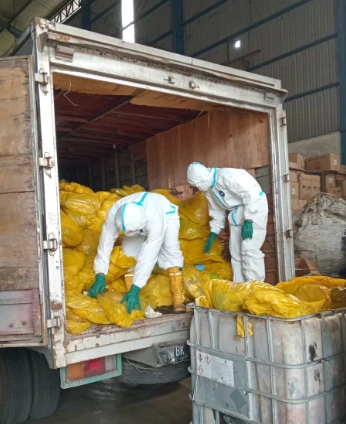
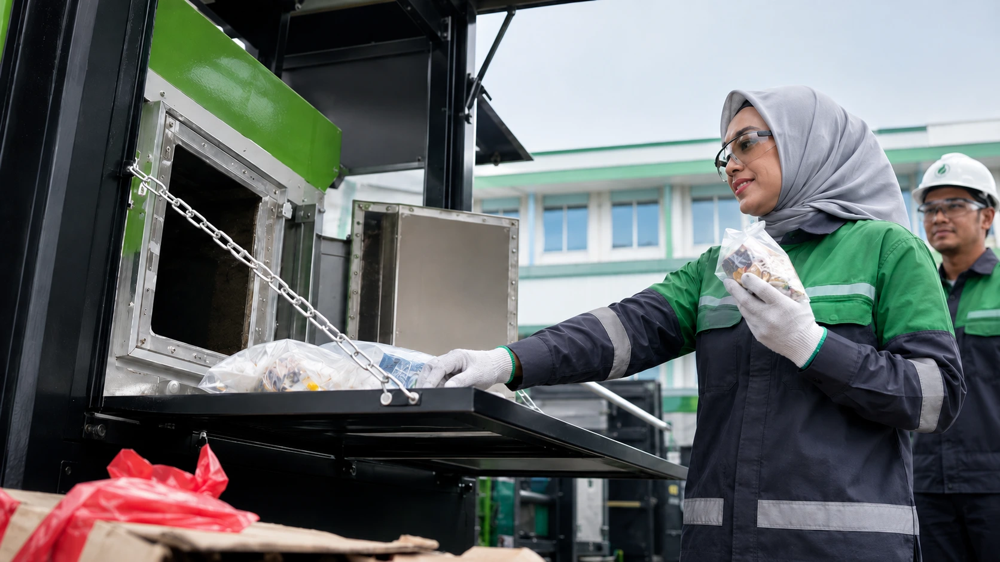
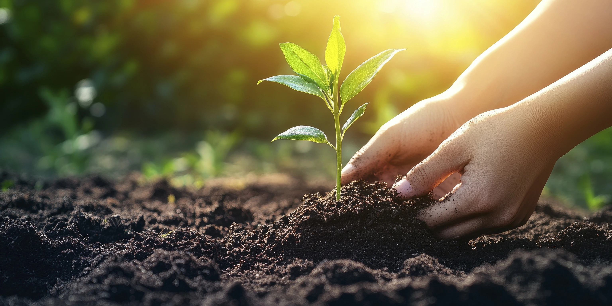

Pengangkutan Limbah B3
Pengangkutan limbah B3 secara terjadwal, terdokumentasi, dan disesuaikan dengan karakteristik limbah serta kebutuhan operasional pelanggan.
Lihat detail →SPLI Services
SPLI menyediakan layanan pengangkutan limbah B3, pengolahan limbah B3, pemusnahan produk reject non B3, serta konsultasi lingkungan untuk membantu perusahaan mengelola kewajiban lingkungan secara lebih profesional.
Layanan Utama
Setiap layanan disusun agar mudah dipahami oleh pelanggan, mulai dari identifikasi kebutuhan, persiapan dokumen, pelaksanaan pekerjaan, hingga dokumentasi akhir.
Pengangkutan limbah B3 secara terjadwal, terdokumentasi, dan disesuaikan dengan karakteristik limbah serta kebutuhan operasional pelanggan.
Lihat detail →Dukungan pengolahan limbah B3 melalui pendekatan yang aman, terkendali, dan berorientasi pada perlindungan lingkungan.
Lihat detail →Layanan pemusnahan produk reject non B3 untuk mendukung pengendalian stok, perlindungan merek, dan tata kelola perusahaan.
Lihat detail →Pendampingan teknis dan administratif agar pengelolaan lingkungan perusahaan lebih tertata, jelas, dan mudah dikendalikan.
Lihat detail →Transporter · Manifest · Schedule
SPLI membantu proses pengangkutan limbah B3 dari lokasi penghasil menuju fasilitas pengelolaan dengan memperhatikan kesiapan limbah, kemasan, label, jadwal, dan dokumen pendukung.

Alur pengangkutan dibuat tertib agar limbah dapat dipindahkan dengan kontrol dan dokumentasi yang baik.
Treatment · Control · Safety
Layanan pengolahan limbah B3 diarahkan untuk memastikan limbah ditangani melalui proses yang sesuai dengan karakteristiknya, sehingga risiko terhadap manusia dan lingkungan dapat dikendalikan.

Penanganan limbah dilakukan dengan fokus pada kontrol proses, ketertiban dokumen, dan perlindungan lingkungan.
Reject Product · Brand Protection
Produk reject, kedaluwarsa, rusak, atau tidak layak edar perlu dikelola dengan cara yang aman agar tidak kembali ke pasar dan tidak menimbulkan risiko reputasi bagi pemilik produk.

Membantu perusahaan menjaga keamanan produk, kebersihan stok, dan perlindungan merek.
Advisory · Compliance · Report
SPLI membantu pelanggan memahami kebutuhan teknis dan administratif dalam pengelolaan limbah dan lingkungan, sehingga perusahaan dapat mengambil keputusan dengan lebih tepat.

Konsultasi diberikan agar proses pengelolaan lingkungan lebih rapi, realistis, dan dapat dijalankan secara bertahap.
Alur Kerja
Setiap pekerjaan diawali dengan pemahaman kebutuhan pelanggan agar layanan yang diberikan sesuai dengan kondisi lapangan.
SPLI mempelajari jenis limbah, sumber timbulan, volume, frekuensi, dan kebutuhan administrasi pelanggan.
Tim menyusun rencana layanan, kebutuhan teknis, serta jadwal pelaksanaan yang realistis.
Pekerjaan dilakukan sesuai ruang lingkup layanan, baik pengangkutan, pengolahan, pemusnahan, maupun konsultasi.
Hasil pekerjaan didokumentasikan agar pelanggan memiliki bukti pelaksanaan dan bahan evaluasi internal.